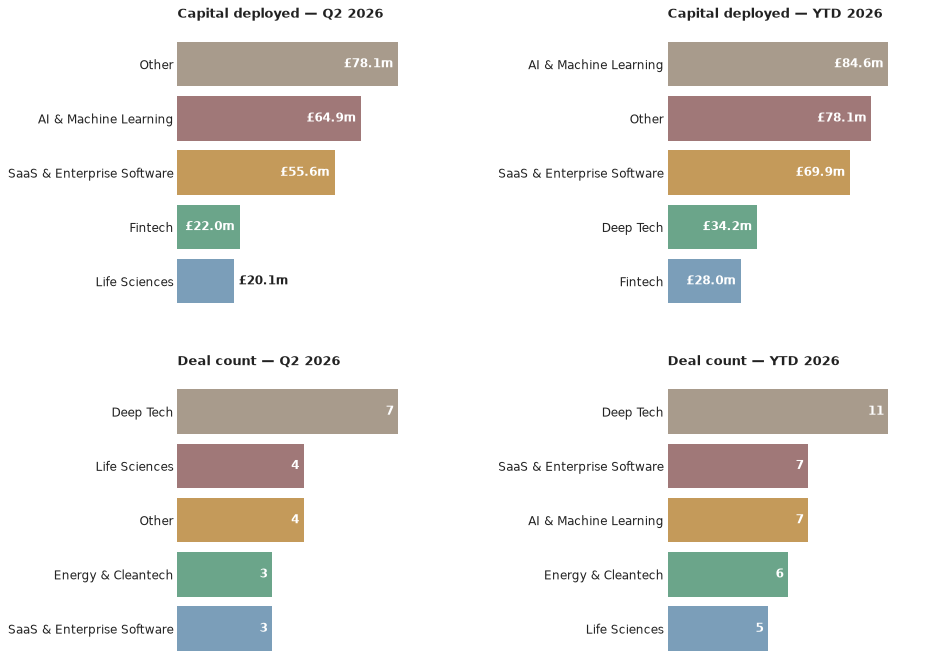

A weekly intelligence briefing monitoring public news coverage for venture capital investment activity in Scottish startups and scaleups — tracking who's investing, at what stages, in which sectors, and with what cadence.
This is an automated newsletter, written by Claude, based on news coverage scraped from 46 websites.
No new deals came to light in Scottish venture news this week — the market's most recent confirmed activity remains the rounds covered in last week's issue.
Q3 2026 has yet to record its first deal — the quarter stands at 0 deals worth £0m, unchanged from last week. The year to date holds at 33 deals worth £157.3m. The deal count is unchanged since the last issue, but the capital figure is down from the £171.3m stated previously: Ardgowan Distillery's raise was previously overstated at £18.2m — that figure included the conversion of existing loan notes to equity, not new investment; the actual round was £4.2m, which is what's now reflected in the year-to-date total.

There's no quarter-to-date investor activity yet to rank. Q2 2026 was Seed-heavy — 8 of the quarter's 22 deals — with Growth (4) and a scattering of Pre-Seed, Series B and 2nd Round rounds behind it. Deep Tech was the most active sector by deal count (7), with SaaS & Enterprise Software, AI & Machine Learning and Property & Construction Tech (3 each) also drawing repeat interest; by capital, AI & Machine Learning (£64.9m) and SaaS & Enterprise Software (£55.6m) pulled in by far the most funding, well ahead of Deep Tech (£15.5m) and Fintech (£22m). Looking at the year so far, Seed remains the dominant stage overall (14 of 33 deals), and Deep Tech the most frequent sector (11).
Lead investor: Highland Europe · Co-investors: Index Ventures · Sector: AI & Machine Learning, SaaS & Enterprise Software · Location: Edinburgh
Wordsmith AI builds a legal operations platform for in-house legal teams, handling contract workflow and review. The Edinburgh company's $70m Series B (~£51.9m) was led by Highland Europe, with continued backing from existing investor Index Ventures, taking its total funding to around $100m. Coverage of the round spanned multiple outlets over June, from an initial write-up on Future Scot to mentions in the Campfire Scotland newsletter, DIGIT.fyi's deal roundup and EU-Startups.
Source: Future Scot
It's been a quiet week for new press coverage, not for Scottish dealmaking — the same rounds covered last week remain the latest confirmed activity, and the year-to-date total above still reflects a steady pace for 2026.